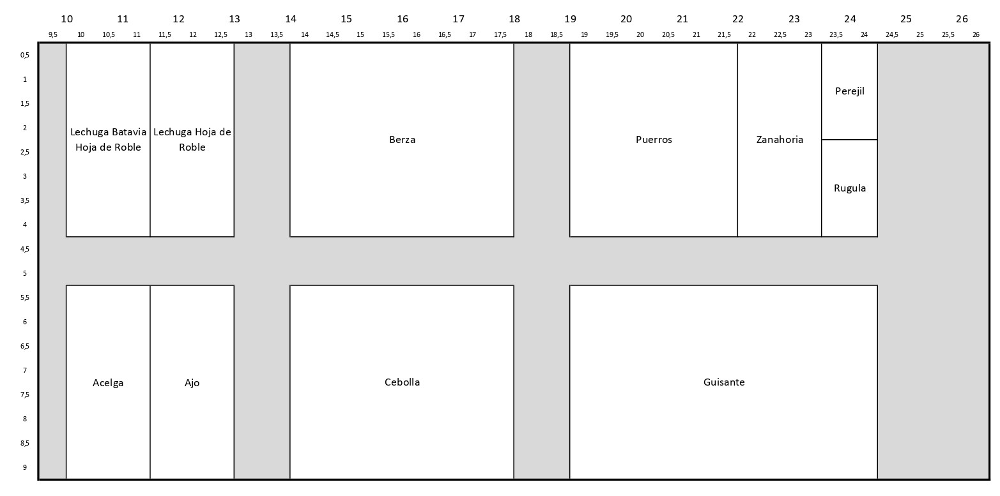
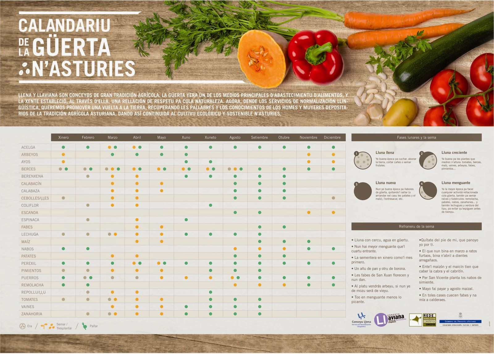

Planificación de Cultivos
Una vez preparados los parterres, empezamos a diseñar nuestra plantación considerando que hemos empezado a plantar a principios de enero y que todavía hace mucho frio.
Lo primero que hacemos es un plan de plantación como el siguiente:

De cara a la planificación, previamente hemos consultado el Calendario de la Huerta en Asturias publicado por el Principado de Asturias